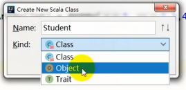
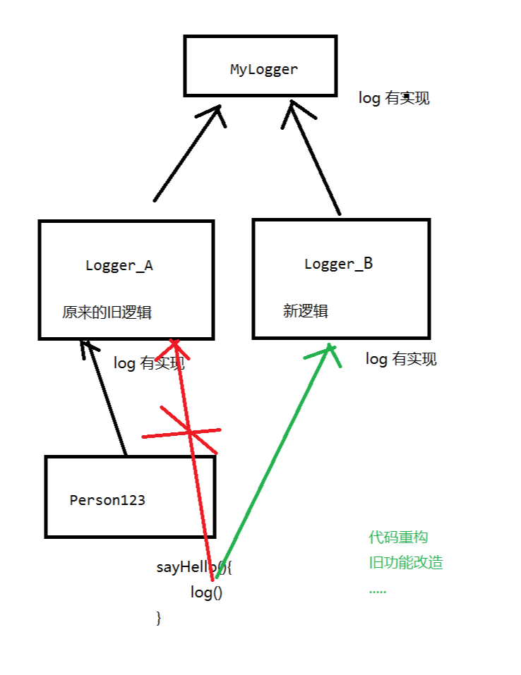

java中的print和println中只能输出一个某种类型的变量(比如字符串里面夹杂多个变量, 但最终输出的就只是一个字符串), 而scala中的print和println可以用","分隔从而直接打印多种类型的多个变量,这样打印出来的其实是一个元组, 里面包含各种元素, 所以本质上打印的也是一个变量,一个元组变量。
为什么创建Scala类时有以下三种种类:
其实下面这三种都是关键字, 而不是类型,
1、class关键字类似于Java中的class关键字,用来定义一个类
2、object关键字相较于class的区别就是object定义的类里可以定义main方法, class关键字定义的类不可以
java中Object类是所有类的父类, Scala中的object是一个关键字, 表示定义了一个带main方法的实例或者一个单例对象。
3、Trait

变量的定义:
Scala 访问修饰符基本和Java的一样，分别有：private，protected，public (没有默认访问修饰符)。
如果没有指定访问修饰符，默认情况下，Scala 对象的访问级别都是 public (java中不指定的话是默认访问修饰符)
Scala 中的 private 限定符，比 Java 更严格，在嵌套类情况下，外层类甚至不能访问被嵌套类的私有成员。
class Dog {
// val关键字修饰, 表示能访问，不能修改, 编译后, 就相当于java中的final关键字
// 相当于java中定义的一个private的成员变量，有getter方法，没有setter方法
val id:Int = 9527
// var关键字修饰, 表示能访问，也能修改。
// 相当于java中定义的一个private?的成员变量，有getter方法，也有setter方法
var age:Int = 3
// private + val修饰的变量表示只能自己访问, (private关键字一般不搭配var,只搭配val)
// 在class Dog类中，声明了一个 private 的变量:
// 第一种情况：如果还有一个object的类型，名称和这个变量所在的类的名称不一致，则不能访问使用private修饰的变量
// 第二种情况：如果还有一个object声明的类型，和这个变量所在的类的名称一致，那么这个private变量修饰的就能访问。实际上,
// 经过编译后, object Dog和class Dog会编译到一个类里, 所以object和class修饰的同名类当然能相互访问其private的
// 变量了,就像java中的private变量只能在本类中访问一样。
private val nickname: String = "旺财"
// 用private[this]就是用来区分object和class修饰的同名
// 类的, 此时object和class修饰的同名类不能再相互跨类访问private[this]修饰的变量了
private[this] val name:String = "小黄"
}
如果有两个同名的分别用class和object修饰的类, 那么class修饰的类叫做伴生类, object修饰的类叫做伴生对象。互为伴生关系的类和对象可以互相访问对方的使用private修饰的变量和方法。
object修饰的类里, 所有的属性、方法都默认是静态的, Scala中将所有静态的东西都放到了object修饰的类里(所以scala中没有static修饰符), class修饰的类里没有。这也是为什么main函数要在object修饰的类里。同时意味着, object修饰的类里的所有的属性以及方法都只有一份, 所以object修饰的类是单例的。更准确地说, 一个类既有object修饰, 也有class修饰的, 把class修饰的类叫做伴生类, 把object修饰的类叫做伴生对象; 一个类只有object修饰的, 没有class修饰的, 就把object修饰的类叫做单例类。
class访问object的变量时要用"类名.变量名", 而object访问class的变量时要用"对象名.变量名"(也就是说object要访问class里的东西就要先创建对象), 因为object里的变量是静态的, 而class里的不是。
跨文件? 跨包? 这些访问修饰符会不会有影响?
如果要使用class修饰的类里的东西, 需要new,也就是如下:
val dog:Dog = new Dog()
如果要使用object修饰的类里的东西, 是不需要new的,如下:

直接在方法里像如下一样使用object Dog1,这其实就是定义了一个引用去引用Dog1: (由于是单例的, 最终打印true)

构造器:
构造器只会出现在class修饰的类中, 因为object修饰的类不用创建对象,使用new的方式创建对象就是调用构造器来创建对象, 如果直接用类名来作为一个对象, 那么得到的是伴生对象
调用某个类的构造器时, 该类里所有的语句都会执行一遍, 以此来初始化所有的成员变量(注意: 该类自定义的方法和该类的内部类不会在调用构造器时立即执行, 只有在调用他们时才会执行),
scala中的主构造器直接就在类名后定义, 只不过如果是无参构造, 那么可以省略"()"不写, 如果要带参的主构造器, 则定义类时写成:
class XXX(参数1, 参数2, ...){
}
需要注意的是: 主构造器的参数可以用修饰符修饰, 比如var、val、private, 就像成员变量一样。
scala中的构造器参数会直接作为该类的一个成员变量, 可供其他类直接调用, 该成员变量的访问修饰符可以自由指定。并且构造器参数也可以赋默认值, 这样的话, 调用构造器时可以省略该参数不写(前提是有默认值的参数放在参数列表后面)。构造器的"()"前加一个private表示将构造器私有化, 也就是不允许用主构造器创建对象。

构造器使用举例:
/**
* 一个class类, 在使用new的方式创建对象的时候，其实是调用了构造器
* 结果：这个构造器执行的时候，会执行这个类定义的"{}"中包含的所有能执行的代码
*
* scala的构造器的定义，就是跟在类名定义的后面的一个（）
* 而且这个构造器，我们把它叫做：主构造器
* scala中还有辅助构造器
*/
class Cat private (val salary:Double, var name:String) {
var abc:Int = _
/**
* 如果把一个类的主构造器给私有了，那么就相当于没有方式再可以构造对象了
* 所以补充了额外的两种方式：
* 1、提供辅助构造器的定义。辅助构造器用def this来定义, 辅助构造器的参数就和普通方法的参数一样, 不能使用修饰符修饰了。辅助构造器的第一行必须调用别的辅助构造器或者主构造器,不能是其他代码, 否则会报错。所以, 可以发现, 不管是哪个辅助构造器, 即使经过多次调用别的构造器,最后也必然会调用主构造器(因为创建第一个辅助构造器时的第一行代码必然会调用主构造器)。辅助构造器是用来囊括主构造器的功能, 所以辅助构造器相当于对主构造器的扩展
* 2、提供apply方法的定义
*/
// 创建第一个辅助构造器
def this(salary:Double, name:String, abc:Int){
this(salary, name)//用this来调用主构造器,。
println("ssss")
this.abc = abc;
}
// 创建第二个辅助构造器
def this(salary:Double, name:String, abc:Int, abcd:Int){
this(salary, name, abc)
println("ssss")
this.abc = abc;
}
println("hello world 111")
val id:Int = {
println("init field")
10 + 1
}
var age:Int = 18;
println("hello world 222")
//方法定义中，定义的代码逻辑， 在对象初始化(new)的时候， 是不会调用执行。
def myPrint(): Unit ={
println(id, age)
println("hello world 4444")
}
myPrint() //虽然自定义的方法不会在new时执行, 但是对该方法的调用语句还是会执行的
println("hello world 333")
}
关于创建数组的两种方式的讨论:
object MainTest {
def main(args: Array[String]): Unit = {
/**
* 下面的第一种方式中：
* 在获取对象的时候，直接使用类名，没有使用new,这种方式，是直接调用object Array构建的数组对象,而不是class Array
* 那么就有个矛盾：object Array是没有构造器的, 所以这个对象的定义在使用object Array的时候，是不能在后面传入参数"(1,2,3,4,5)"的。
* 问题的解决方法就是：scala还给所有的伴生对象和伴生类之间，提供了一个纽带： apply方法,就是让object Array在传入参数时, 去调用其Array.apply方法,apply方法的作用就是让object Array也能创建新对象(当然底层实际是通过class Array创建的。与apply方法对应的还有unapply方法。
apply方法的定义是: def apply(x : Int, xs : Int*) : Array[Int] = {...}
可以发现参数是一个Int型的x和一个Int型的可变参数xs(当然Int是由泛型的具体类型决定的),所以传入参数"(1,2,3,4,5)"即x = 1, xs = 2,3,4,5。
* 数组Array类型中的 apply 方法的逻辑：
* 1、先计算元素的个数，然后使用普通的方式，调用class object来用new构建一个对应长度的新的定长数组
* 2、然后把所有元素，分别赋值到该新数组的对应的位置上
*
*/
//方式一
val intArray: Array[Int] = Array(1,2,3,4,5)
//方式二。这种方式是标准的new调用构造器创建对象的方式, "[Int]"是泛型, "10"是构造器参数
val intArray2:Array[Int] = new Array[Int](10)
}
}
ctrl+ 鼠标左键点击第一种方式的Array类, 提示下面两种跳转方式,选择apply方法就可以看到其具体实现

apply方法的具体实现如下:

也就是说使用new的方式去创建对象一定是直接使用class类的构造器。而不用new的方式获取对象就一定是使用了object类, 区别就是有没有带参数, 没带就是直接用别名来引用了object类, 如果带参了, 那就肯定是通过apply方法来获取对象的。所以可以认为apply方法就相当于object类的构造器。
自定义apply方法举例如下:
/**
* 如果使用和java类似的效果和方式去构建对象，那么必须使用new来调用对应的构造器来构建对象
* 但是scala提供了一种新的方式，可以不使用new也能构建对象(不这里不是指object的单例对象)
* 那就是：apply方法
* scala底层提供了对应的apply方法，帮助我们去构建对象，简化构建对象的复杂度
*/
class Pig(val name:String) {
println("调用了主构造器")
}
object Pig {
def apply(name:String):Pig = {
println("调用了apply方法 1111 ")
new Pig(name)
}
def apply(name:String,newName:String):Pig = {
println("调用了apply方法 2222")
new Pig(name)
}
}
object PigTest{
def main(args: Array[String]): Unit = {
//创建或者获取对象的两种方法如下:
val pig1:Pig = new Pig("猪猪侠")
//下面这种方式构建对象，就相当于是调用了这个类的object中的一个apply方法
val pig3 = Pig("猪猪侠")
println("------------------------")
val pig4 = Pig("猪猪侠", "蜘蛛侠")
//注意下面这种方式并不是获取对象, 只是pig2引用了object Pig而已,和pig1、pig3、pig4
//的区别就是pig1、pig3、pig4能调用到name属性, 而pig2是不行的, 因为没创建对象。
val pig2 = Pig
}
}
上面的代码打印结果如下:

将一个object的类继承App类, 那么, 不用main方法, 也可以run该类。

因为jvm只认main方法, 那么这里的原理就是App类里有main方法, 然后再在main方法里, 将AppTest里的代码使用类似反射的方式来执行(其实是用交互式命令行的方式去执行shell命令)。下图是App类里的main方法:

抽象类
scala的抽象类使用和java中一样,只有一点小小的区别:
1、在子类中覆盖抽象类的抽象方法时，可以不需要写 override 关键字(java中必须要),当然写了也可以。在子类中覆盖抽象类的普通方法时, 则必须使用override关键字(这点和java一样)。(这点区别其实无关紧要, 全部加上override关键字就行了, 就和java一模一样了, 也便于记忆。抽象属性同理也可以不写override)
2、在scala的抽象类中除了方法可以抽象, 属性也可以有抽象的属性(也就是不对属性进行初始化),如下图。在scala的普通类里, 属性是必须要初始化的, 否则会报错,而在抽象类里则可以不初始化。而在java中, 不管是不是抽象类,属性不进行初始化的话, 编译器都会自动赋上一个默认初始值。

所以scala的抽象类中既可以有抽象属性, 也可以有普通属性;既可以有抽象方法, 也可以有普通方法。仅仅比java多了个抽象方法而已。
scala中子类继承父类使用的关键字也是extends。当然scala也可以像java一样使用匿名内部类的方式来直接定义一个匿名子类并重写实现父类的抽象方法。
java不支持多继承, 但scala可以。
trait关键字
trait是特质的意思
scala中创建类有三种方式:
class
object
trait
1、trait关键字首先拥有java中的interface关键字的功能, 也就是定义接口:
(首先要注意到, 视频课的老师在做上课资料的pdf时, 并不知道java中关于在jdk1.8时接口可以定义default方法的特性, 所以可能在这方面,文末的pdf可能会有些错误)
java中的接口里定义的属性(成员变量)都是常量,而且还必须是在定义时就进行初始化（因为被static final修饰, 如果只是被final修饰, 则可以不在定义时就初始化）,接口里的成员变量不管写不写修饰符,都是被public static final修饰的,不能用其他修饰符)。而scala中的接口中的属性就没有要求一定是常量了, 并且可以是抽象属性或非抽象属性,
java中的接口里可以有抽象方法, 还可以有default修饰的有默认实现的方法(不能直接定义普通方法), 而scala的接口中, 可以有抽象方法, 也可以直接定义普通方法。
在java和scala中, 接口都可以有普通实现类和抽象实现类(abstract修饰的类), java和scala的抽象实现类可以不用实现接口的抽象方法(也可以实现)。scala中类实现接口用的也是extends关键字, 和继承一样。
scala中也可以有子接口继承父接口, 也是用trait关键字定义子接口, 如 trait Child extends Parent{ }
trait关键字定义的类不能有构造器(和java的接口一样), 因此trait A(i: Int){ }是不可以的
2、trait的底层就是用java中的抽象类来实现的, 因为在java中, 接口可以看做是抽象类的一种特例, 接口能有的操作, 抽象类都具备, 所以scala用java中即支持抽象的方法, 也支持非抽象的方法, 而且对属性的支持也很全面的抽象方法来实现trait, 使它不仅可以实现接口, 还有其他更强大的功能。
3、scala 不支持对类进行多继承，但是支持多重继承 trait，使用 with 关键字即可
因为trait其实相当于java中的接口, 所以scala其实相当于也是单继承, 多实现, 只不过继承和实现都是用extends, 多实现时scala用with相连, 而java用implement实现接口, 并用","连接多个接口
/**
* 其中AA1可以是抽象类，也可以是特质trait(也就是说extends关键字后面跟的可以是
* 抽象类, 也可以是特质), 但with后面跟的只能是特质，不能是抽象类。所以能使用特质就
尽量不要使用抽象类, 只有当这个组件需要定义构造器的时候, 才使用抽象类, 否则定义了
多个抽象类的话,scala中的类是继承不了多个抽象类的
*/
class DD1 extends AA1 with BB1 with CC1{
override def run1(distanct: Int): Int = 1
override def run2(distanct: Int): Int = 2
override def run3(distanct: Int): Int = 3
}
abstract class AA1{
def run1(distanct:Int):Int
}
trait BB1{
def run2(distanct:Int):Int
}
trait CC1{
def run3(distanct:Int):Int
}
使用with为实例对象混入Trait:
有时我们可以在创建类的对象时，指定该对象混入某个 Trait，这样，就只有这个对象混入该Trait 的方法，而类的其他对象则没有
trait MyLogger {
def log(msg:String){}
}
trait Logger_A extends MyLogger{
override def log(msg:String): Unit ={
println("AAAAAA : "+msg)
}
}
trait Logger_B extends MyLogger{
override def log(msg:String): Unit ={
println("BBBBBB : "+msg)
}
}
class Person123(val name:String) extends Logger_A{
def sayHello(): Unit ={
println("Hi ,i'm name", name)
//该类本身没有实现log方法,而是调用了父类的log方法
log("sayHello is invoked!")
}
}
object MyLogger_Trait_Test{
def main(args: Array[String]) {
//简单的使用Person123类创建对象来调用方法, 此时log方法调用的是其父类Logger_A的方法
val p1=new Person123("liudehua")
p1.sayHello()
//使用with Logger_B 后,Person123中使用到了Logger_B也有实现的方法时, 则会直接调用 //Logger_B中方法, 不管Logger_B是不是Person123的父类
val p2=new Person123("zhangxueyou") with Logger_B
p2.sayHello()
}
}
上面的代码打印结果如下:

上面的代码的类的架构图如下:

混入的作用是AOP, 即面向切面编程, 在不修改源码的基础之上, 进行代码逻辑的增强。放在上面的例子中就是, 原来没有Logger_B类, 但我觉得Logger_A里的log方法的旧逻辑有些不够用了, 但Logger_A中还有些其他方法的逻辑还在使用, 那就新建一个Logger_B类, 也继承与Mylogger类, 实现log方法的新的逻辑, 让需要用新逻辑Logger_A中其他一些方法的老逻辑的新子类依然继承Logger_A类但是用with关键字使用Logger_B中的log方法。这样也不会影响原来的业务。符合软件设计中的开闭原则的思想: 对修改关闭, 对扩展开放。开闭原则是设计模式的总原则。
Scala 中支持让类继承多个 Trait 后，依次调用多个 Trait 中的同一个方法，那么对这同一个方法的调用顺序是怎么样的? 见pdf的4.3.6节的内容
模式匹配

match的第一个功能, 匹配值(类似于java中的switch的功能, 但有一点和java不一样, java中是如果不写break, 满足某分支后,后面的所有分支不管满不满足,都会执行, match里的case语句不写break也只会执行一个分支, 也就是说scala中的match只会执行一个分支, 相当于java中每个case都写了break语句,scala中的match每个case自带break效果):
import java.util.Random
/**
* match用来匹配值,不同的值走不通的分支,相当于java中的switch的功能,比switch要强大的地方就
是java的switch只能匹配一种类型的值, 而match匹配时值可以是各种类型。
*/
object MatchTest1 {
def main(args: Array[String]): Unit = {
var array: Array[Any] = Array(1, 2.2, false, "aa")
val random = new Random()
val index = random.nextInt(array.length)
val value = array(index)
println(value)
value match {
case 1 => {println("结果为：1")}
case 2.2 => {println("结果为：2.2")}
case false => {println("结果为：false")}
// case "aa" => {println("结果为：aa")}
//"_"下划线的又一种用法, 当做match里的其他情况(用处类似于java中的switch里的default)
case _ => println("见鬼了")
}
}
}
match匹配值的强化, 按类型或条件来匹配值:
import java.util.Random
object MatchTest2_Type {
def main(args: Array[String]): Unit = {
var array: Array[Any] = Array(1, 2.2, false, "aa", 3, 4, 5, 6)
val random = new Random()
val index = random.nextInt(array.length)
val value = array(index)
println(value)
//case后面不仅可以加常量值(或常量表达式, 还可以加变量, 这点不同于java)
value match {
//如果是Double类型的变量, 则走这个分支, 并且还能
//取得该变量的具体值,所以取到的值会随着具体值的变化而变化
case y:Double => println("double",y )
//甚至match匹配的目标可以只有类型没有变量, 下面这种写法也是正确的,上面那句代码带个y是
//为了得到匹配到的值传给该变量y,好在"=>"推导符后面进行使用
//case Double => println("double")
//match匹配的目标还可以只有变量没有类型, 这样的话该变量将默认是Any类型,这样的话
//所有类型都能匹配上这个分支了,这样的话就和"case _ => ..." 差不多了, 只是多了一
//个变量给"=>"推导符后面进行使用
//case Double => println("double")
//如果是Boolean类型的变量, 则走这个分支
case z:Boolean => println("boolean", z)
/*
case的变量后面还可以加守卫条件, 就像scala的for循环可以加守卫条件一样。需要注意守卫条件是整个函数推导式的一部分,在if语句前后不能加任何的"()",它们是一个整体, 要加只能在参数列表处加"()", 如下面这句代码改为case (x:Int) if x > 2 => println("int >= 2", x) 是可以的
*/
case x:Int if x > 2 => println("int >= 2", x)
/*注意下面这句代码守卫条件"<="是小于等于号, 不要和"=>"搞混了。 注意, 允许case语句的范围有重合, 如上下这两句代码, 但需要注意的是,比如value为3,因为同时满足这两句case分支的条件, 但执行完上面这个case分支后, 不会再执行下面这句case分支, 也说明了scala中的match只会执行一个分支, 相当于java中每个case都写了break语句
*/
case x:Int if x <= 5 => println("int", x)
case _ => println("str")
}
}
}
match除了能匹配相应类的类型外,还能匹配集合。 比如匹配List时, 还能按照元素的个数来匹配, 甚至还可以指定某一位元素是特定的元素值来作为匹配条件。
import java.util.Random
object MatchTest3_Collection {
def main(args: Array[String]): Unit = {
val list1 = 3 :: 4 :: 0 :: 5 :: Nil
val list2 = 3 :: 4 :: 5 :: Nil
val list3 = 4 :: 5 :: 3 :: 4 :: Nil
val list4 = 3 :: 4 :: 3 :: 4 :: Nil
val array = Array(list1, list2, list3, list4)
val random = new Random()
val index = random.nextInt(array.length)
val value = array(index)
println(value)
value match {
//当value是List类型,并且该List里恰好有三个元素时匹配
case x :: y :: z :: Nil => {
println("3")
println(x, y, z)
}
//当value是List类型且该List里恰好有4个元素且该list的第一、二个元素值分别为4和5时匹配
case 4 :: 5 :: a :: b :: Nil => {
println("4")
println(a, b)
}
//上面的代码中的x,y,z和a,b还可以被占位符"_"所代替,表示任意元素均可,如下:
case 3 :: 4 :: _ :: b :: Nil => {
println("4")
println(b)
}
case _ => {
println("5")
}
}
}
}
我们知道, map有三种传入key得到value的方式:
val map = Map(("a",1), ("b",2), ("c",3))
val key = "d"
//如果key存在,直接返回对应的类型的value,如果value不存在, 会报错
println(map(key))
//如果key存在,返回被Some类型包裹的value,如果key不存在, 返回None
println(map.get(key))
//如果key存在,直接返回对应的类型的value,如果key不存在, 返回默认值
println(map.getOrElse(key, 100))
如果要你用match和map.get(key)来实现map.getOrElse()方法, 那么实现的方法肯定是如下:
val value = map.get(key)
val result = value match {
case Some(x) => x
case None => 100
}
实际上, scala中也正是这样实现的:

上面说的也是match的一种用法, 实际上, Some是样例类, None是样例对象, 样例类和样例对象存在的目的就是用来做模式匹配的

样例类的对象经过特殊的序列化与反序列化的设计, 序列化时对象里只会包含你添加在主构造器里的那些属性, 不会携带那些有默认实现的方法, 所以序列化后的对象字节数会很少, 所以在进行网络传输时负载会比较低。如果是java的原生序列化机制, 在序列化时, 除了携带对象的属性值外, 序列化还要携带该类的定义的方法之类的所有信息, 字节数就会多很多。所以说样例类可以理解为装数据的容器, 因为样例类的对象真正拥有的东西就只有自己定义的那几个属性而已。
上上图的Some就是样例类,Some(v)是样例类的一个实例, 而None就是样例对象。
import java.util.Random
// 样例类就是用case关键字来定义的类, 样例类可以理解为一个装数据的容器对象
// 样例类和普通的类有什么区别?区别就是样例类里面的各种常见的方法，都已经按照默认的方式
// 帮你实现了, 比如equals toString hashCode apply ....这些方法,定义case class AAAA后,
//会自动创建case object AAAA(因为apply方法是静态的,要在object里实现)。所以叫做样例类。
//那么, 定义类的时候, 你只需要定义好属性就可以了, 因为scala的主构造器参数会作为属性, 所
// 以样例类一般直接用主构造来定义属性, 所以样例类的定义会非常简洁, 如下:
case class AAAA(var id:Int, var age:Int)
case class BBBB(var name:String)
case class CCCC(var salary:Double)
//和普通object类一样, 如果要定义case object 类, 那么就不能带构造器参数,因为object类
//是没有构造器的。case object 类叫做样例对象, 样例对象没有其他作用, 其实就是一个信号, 用来
//表示某种信息或代表某种标志。样例类可以有多个不同的对象, 因为可以传给构造器不同的参数,而样
//例对象由于没有构造器, 所以只有一个, 类似于单例对象
case object DDDD // 信号
object MatchTest_CaseClass {
def main(args: Array[String]): Unit = {
//因为实现了apply方法, 所以样例类默认可以通过apply方法来创建对象的, 不使用new,
//其实也可以new, 但一般样例类不推荐这种用法。使用如下:
val array = Array(AAAA(1,18), BBBB("huangbo"), CCCC(1000000), new AAAA(2,19))
val random = new Random()
val index = random.nextInt(array.length)
val value = array(index)
println(value)
value match {
//匹配AAAA样例类的对象的一种用法。这种用法和普通的类型的匹配一样。
// case AAAA => {
// println("111")
// }
//匹配AAAA(var id:Int, var age:Int)样例类的对象, 构造器参数可以随便用同类型的变量代替
//但要注意, 构造器的参数个数一定要对应, 否则会报错(注意:普通类(包括有apply方法的类)是
//没有带构造器参数这一匹配用法的,普通类匹配时直接用类名匹配)。 样例类匹配时使用构造器
//参数的目的是拿到样例类的属性值,赋给变量, 以便于在"=>"推导符后面使用
case AAAA(x,y) => {
println(x, y)
}
//当然, 也可以将构造器参数的值固定为某个特定的值进行匹配
// case AAAA(2,y) => {
// println("111",y)
// }
case BBBB(name) => {
println(name)
}
case CCCC(ss) => {
println(ss)
}
}
}
}
偏函数(PartialFunction)
object PartialFunctionTest {
def main(args: Array[String]): Unit = {
println(abc("c"))
println(abc1("c"))
}
// 在定义一个偏函数的时候，要指定两个泛型
// 第一个是输入的泛型, 给case指定其后面跟的值的类型
// 第二个是输出的泛型, 指定返回值的类型
// 偏函数的方法体里，就只有一堆没有写match,只写了case 分支的代码体, 也就是说偏函数其实
//就是定义了一个方法并将模式匹配放在方法里的一种简写形式, 用模式匹配的结果作为方法的返回值。
def abc:PartialFunction[String,Int] = {
case "a" => {
// 1000 行代码
1
}
case "b" => 2
case _ => 3
}
//下面定义的这个abc1方法等价于上面的abc方法:
def abc1(value:String):Int = {
//" val result = "和方法的返回值result其实可以去掉,因为value match的"{}"本来就是有返回值的。
val result = value match {
case "a" => {
// 1000 行代码
1
}
case "b" => 2
case _ => 3
}
result
}
}